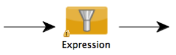
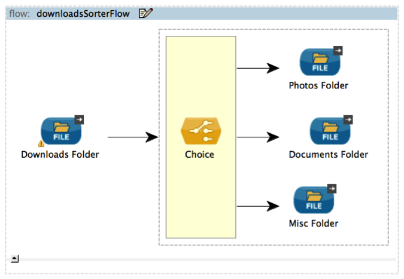
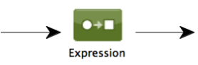
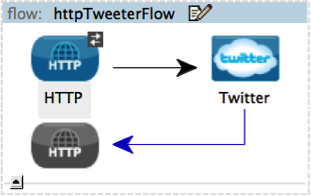
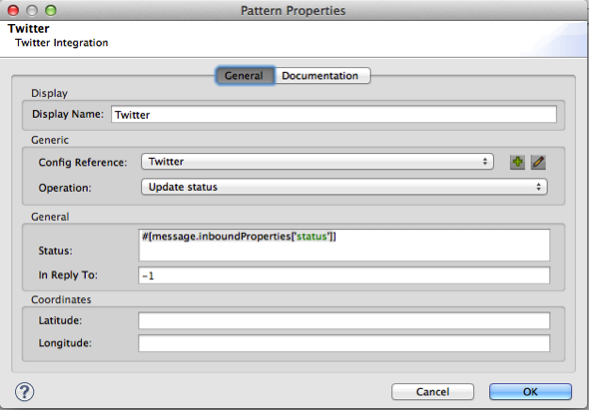
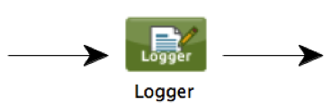
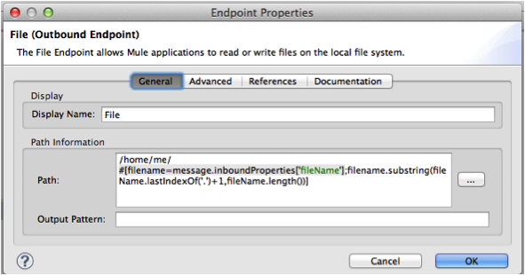
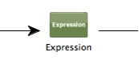
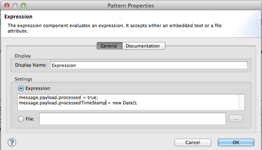

Mule Expression Language (MEL)
| Access the MEL Cheat Sheet for quick reference. |
This guide is for designers of Mule applications. The building blocks of flows often use information about Mule messages and their environment to make decisions about routing, filtering, and other common tasks. The logic of these decisions often relies on evaluating expressions.
Mule Expression Language (MEL) is the primary language used for formulating such expressions throughout Mule ESB.
All features of MEL can be used in XML application configuration files, and a few require additional Java programming. All MEL features are available within the visual interface provided by Mule Studio.
Introduction to Mule Expression Language
The Mule enterprise service bus provides loose coupling between applications or other entities, generically known as endpoints, by passing payloads between them as messages. Each step on the path from the entering endpoint to the exiting endpoint is a message processor. Mule Application Architecture explains this architecture and its components.
Mule Expression Language (MEL) supports the work of message processors by providing a means of accessing, manipulating, and using information from the message and its environment.
|
While Mule Expression Language is new in Mule 3.3, Mule has supported expressions since Mule 2.1. Prior to Mule 3.3, expression evaluators provided this functionality. Each expression evaluator has its own rules and syntax. With one set of rules and syntax, MEL provides a uniform way to achieve all of the functionality of expression evaluators and more; and Mule Expression Language is the focus of enhancements in future releases. Mule expression evaluators continue to be fully supported within Mule ESB, but given the availability of Mule Expression Language, their use is no longer recommended. |
In most cases, Mule expressions work within message processors to modify the way those processors do their main jobs (for example, routing, filtering). Here are the principal use cases:
-
Decide on a course of action based on the contents, properties, or context of a message and its attachments. For example, a flow controller can route purchase orders for different types of products to different JMS queues.
-
Select a value from the contents, properties, or context of a message and its attachments. For example, a connector might extract a specific piece of information from the the current message to use as an argument.
-
Replace a token with an actual value. For example, a logger can extract information from the payload contents and place it into a logging message.
In some situations, you can also use Mule Expression Language in place of a programming language like Ruby, JavaScript, or Groovy for simple scripts. MEL can access the message and its environment more conveniently than those languages can.
The Using Mule Expression Language section provides examples that implement the above use cases.
-
The Mule Expression Language Syntax section explains how to combine operators and operands into properly formed MEL expressions.
-
The Context and Functions section explains how to extract MEL information about the Mule message and its environment to use by value, or sometimes by reference, as operands in MEL expressions. In some cases, MEL expressions can change that information. The context consists of objects modeling the following:
-
Server: The operating system on which the message processor is running.
-
Mule: The Mule instance on which the application is running.
-
Application: The user application within which the current flow is deployed.
-
Message: The package (payload, attachments, properties) that the message processor is processing.
The functions, Xpath and Regex, provide ways of extracting information that doesn’t already exist as a single value within the context. By default they work on the payload, but you can pass them different arguments explicitly. Details appear in the MEL Context Objects and Functions section.
Once you learn MEL, you can use it for many tasks in numerous situations and places to facilitate your use of Mule.
Mule Expression Language Syntax
A typical MEL expression combines one or more operands with zero or more operators in a Java-like syntax and returns the resulting value.
At the heart of MEL are property expressions of the form contextObject.property. These provide easy access to properties of the Mule message and its environment. For example, the expression message.payload represents the payload property of the message context object. Its value is the message payload.
Java method invocations and assignments are the other common MEL expressions.
In most cases, a MEL expression stands alone as the value of a configuration property of a message processor. MEL evaluates the expression at runtime, and the message processor uses the result.
The syntax of a MEL program largely follows Java, but MEL implements dynamic typing by performing type coercion at runtime. Semicolons follow each statement except the last, whether the statements are on one line or separate lines. Return statements are usually unnecessary, because a MEL program returns the value of the last MEL statement executed.
MEL operators and basic operands are conventional and predictable (for example, 2 + 2 == 4 returns true). Property expressions provide convenient access to information from the message and its environment (for example, server.fileSeparator returns "/" if the application is running on a Linux server, and "\" on a Windows server.). The remainder of this section summarizes the most important elements of MEL syntax.
MEL Operands
An operand can be a literal, a variable, or a MEL expression. The Null Literals section describes the kinds of literals you can use in MEL. The Lists, and Arrays section describes data structures that are especially useful as operands in MEL expressions. The MEL Assignments section discusses variables. In addition to using Java-style variables, you can use flow variables and session variables, which have more Mule-centric scopes. The Context and Functions section explains how to use variables.
The MEL expressions that most commonly appear as operands are property expressions and method invocations.
Property Expressions
The Context and Functions section describes the context objects and their properties. The syntax of a property expression is contextObject.property. This can appear as an operand in most MEL expressions, including on the left side of an assignment if the property is writable from MEL. You can use the same syntax to refer to the properties of a Java bean as you can with a context object.
Method Invocations
Mule Expression Language uses standard Java method invocation. You can provide a fully qualified class name or import a class and use the unqualified name. MEL automatically imports a number of Java classes (see Appendix).
The following examples illustrate Java method calls.
message.payload.getName()
If payload is a Java object—for example, representing a person—this code invokes its getName method. The value of the expression is the value that getName returns—presumably a string representing the person’s name.
java.lang.System.currentTimeMillis()
The value is the current time in milliseconds, as returned by Java. Because MEL automatically imports java.lang.System (see Appendix), you can also write this as:
System.currentTimeMillis()
MEL Operators
MEL operators follow standard Java syntax, but operands are always by value, not by reference. For example, "A" == ' A ' evaluates to true, whereas the same expression evaluates to false in Java.
Arithmetic Operators
| Symbol | Definition | Example/Value |
|---|---|---|
+ |
Plus. For numbers, the value is the sum of the values of the operands. For strings, the value is the string formed by concatenating the values of the operands. |
|
- |
Minus. The value is the value of the first operand minus the value of the second. |
|
/ |
Over. The value is the value of the first operand divided by the value of the second. |
|
* |
Times. The value is the product of the values of the operands. |
|
% |
Modulo. The value is the remainder after dividing the value of the first operand by the value of the second. |
|
Comparison Operators
| Symbol | Definition | Example/Value |
|---|---|---|
== |
Equal. True if and only if (iff) the values of the operands are equal. |
|
!= |
Not equal. True iff the values of the operands are unequal. |
|
> |
Greater than. True iff the value on the left is greater than the value on the right. |
|
< |
Less than. True iff the value on the left is less than the value on the right |
|
>= |
Greater than or equal. True iff the value on the left is greater than or equal to the value on the right. |
|
⇠|
Less than or equal. True iff the value on the left is less than or equal to the value on the right. |
|
contains |
Contains. True iff the string on the right is a substring of the string on the left. |
|
is, |
Is an instance of. True iff the object on the left is an instance of the class on the right. |
|
strsim |
Degree of similarity. The value of the expression is a number between 0 and 1 representing the degree of similarity between the two string arguments. |
|
soundslike |
Sounds like. True iff the two string arguments sound alike according to a Soundex comparison. |
|
Logical Operators
| Symbol | Definition | Example/Value |
|---|---|---|
&& |
Logical AND. True iff both operands are true. (Don’t use and) |
|
|| |
Logical OR. True if at least one operand is true. |
|
or |
Chained OR. Scans left to right and returns the value of the first non-empty item |
|
MEL Assignments
An assignment is a MEL expression consisting of an identifier representing a mutable object to the left of an equal sign and a MEL expression to the right of the equal sign. For example:
message.payload = 'fu'
sets the payload of the current message to the string “fu”. The Context and Functions section describes which elements of the message and its environment you can set with a MEL assignment.
MEL determines types dynamically, so declaring the type of a variable is optional. For example if, with no prior declarations, you write
number = 1; number == '1'
MEL assigns the expression the value true.
You can cast values to specific types. For example if you write
number = (String)1; number is String
MEL returns the value true for this expression.
MEL Literals
Literals in MEL can be strings, numbers, Boolean values, types, and nulls. The Lists, and Arrays section shows how you can provide data structures as literals as well.
Numeric Literals
Numeric literals are integers and floating point numbers, with the same ranges of values as the underlying Java system.
Integers are assumed to be decimal unless they begin with 0. An integer consisting of 0 followed by digits ranging from 0 to 7 is interpreted as octal. An integer starting with 0x followed by digits ranging from 0 to 9 or letters ranging from a to f is interpreted as hexadecimal. An integer ending in an uppercase I is interpreted as a BigInteger.
MEL recognizes floating point numbers by the presence of a decimal point. Floating point numbers can optionally have suffixes of d, f, or B to represent double, float, or BigDecimal.
The following are examples of numeric literals: 255, 0377, 0xff (all represent 255); 3.14159, 3.14159f, 3.14159265358979d (all represent pi).
Literals that include alphabetic characters are case sensitive.
String Literals
String literals are sequences of characters enclosed in single quotes.
| You cannot use double quotes to express String literals as you can in Java, because MEL expressions appear within double quotes in configuration files. |
Within String literals you can use the following escape sequences to represent non-printable characters, Unicode characters, and the escape character.
| Escape Sequence | Represents |
|---|---|
\ \ |
\ |
\n |
Newline character |
\r |
Return character |
\xxx |
ASCII character represented by the octal number xxx |
\uyyyy |
Unicode character represented by the hexadecimal number yyyy |
Type Literals
You can refer to any Java class by its fully qualified name or if it is one of the classes in the Appendix, by its unqualified name. References use the same dot notation as in Java, except that you must use $ rather than a dot to refer to a nested class.
MEL Key/Value Maps, Lists, and Arrays
Maps are important in Mule Expression Language because much of the context you can work with comes in the form of maps.
Mule Expression Language uses a convenient syntax for maps and other data structures. It begins with map literals, and there is also a convenient way to access items in maps.
Map, List, and Array Literals
MEL provides a streamlined way to access map data.
Rather than constructing a map with a new statement, and then using its put method to populate it, you can simply write the following:
[key1 : value1, key2 : value2, . . .]
You can use this literal form wherever you would otherwise use a map by name, including as a method argument.
You can use similar literal forms for lists ({item1, item2, . . .}) and arrays ([item1, item2, . . .]).
Arrays in Java must specify the type of their contents, but in MEL they are untyped. MEL supplies the correct type when you use them – either by determining it at compile time or coercing the array to the correct type at run time.
Referring to Map Data
MEL provides a simpler way to refer to map items than java.util.Map provides. For example, Mule associates a map containing properties set by the inbound endpoint processor with each message. You can refer to this map as message.inboundProperties.
For example, to retrieve the inbound property with key name foo, write 'message.inboundProperties[foo]'.
If that property can be set (never the case with inbound properties, but true of some properties in other maps), you can write message.inboundProperties[foo] on the left side of an assignment. The Context and Functions section explains which items in the context can be set and which cannot. If you try to set a property that cannot be set, Mule indicates failure by throwing org.mvel2.PropertyAccessException.
Control Flow
MEL provides a full range of Java control flow statements. The most useful for typical MEL expressions are conditional operands (often called ternary statements).
A conditional operand has the form condition ? true value : false value.
For example: x = (name == 'Smith' ? 'Smith' : 'Unknown') sets the variable x to the string “Smith†if the value of name is “Smith†and to the string “Unknown†if the value of name is not “Smith”.
MEL Context Objects and Functions
Property expressions facilitate the use of properties of the Mule message and its environment as operands in MEL expressions. They take the form contextObject.property. Context objects provide logical groupings of the properties of the message and its environment.
Functions provide ways to extract information that doesn’t already exist as a single value that can be embodied in a property.
MEL Context Objects
Context objects model the message and its environment. They make MEL Mule-centric, not just another expression language. This section documents the properties that MEL has access to. It describes the following context objects:
-
Server: properties of the hardware, operating system, user, and network interface.
-
Mule: properties of the Mule instance.
-
App: properties of the Mule application.
-
Message: properties of the Mule message.
Server
This object provides read-only access to the properties of the hardware, operating system, user, and network interface listed in the table.
| Name | Description |
|---|---|
fileSeparator |
Character that separates components of a file path ( "/" on UNIX and "\" on Windows) |
host |
Fully qualified domain name of the server |
ip |
The IP address of the server |
locale |
Default locale (of type java.util.Locale) of the JRE (can access server.locale.language and server.locale.country) |
javaVersion |
JRE version |
javaVendor |
JRE vendor name |
osName |
Operating system name |
osArch |
Operating system architecture |
osVersion |
Operating system version |
systemProperties |
Map of Java system properties |
timeZone |
Default TimeZone (java.util.TimeZone) of the JRE |
tmpDir |
Temporary directory for use by the JRE |
userName |
User name |
userHome |
User home directory |
userDir |
User working directory |
For example, the value of ‘server.userName’ is a string representing the name of the user.
Mule
This object provides read-only access to the properties of the Mule instance listed in the table.
| Name | Description |
|---|---|
clusterId |
Cluster ID |
home |
File system path to the home directory of the mule server installation |
nodeId |
Cluster node ID |
version |
Mule version |
For example, the value of ' mule.version ' is a string representing the Mule version.
App
This object provides access to the properties of the Mule application listed in the table.
| Name | Description |
|---|---|
encoding |
Application default encoding (read-only) |
name |
Application name (read-only) |
standalone |
True if Mule is running standalone (read-only) |
workdir |
Application work directory (read-only) |
registry |
Map representing the Mule registry (read/write) |
For example, the value of ‘app.name’ is a string representing the application name.
For example, ‘app.registry['foo']’ refers to the object named foo in the Mule registry map. You can set or retrieve its value.
Message
This object provides access to the properties of the Mule message listed in the table. The meanings of most of these properties are documented elsewhere, not here.
| Name | Description |
|---|---|
id |
(read-only) |
rootId |
(read-only) |
correlationId |
(read-only) |
correlationSequence |
(read-only) |
correlationGroupSize |
(read-only) |
replyTo |
(read/write) |
dataType |
(read-only) |
payload |
(read/write) |
inboundProperties |
Map (read-only) |
inboundAttachments |
Map (read-only) |
outboundProperties |
Map (read/write) |
outboundAttachments |
Map (read/write) |
exception |
(read-only) |
Message Properties and Attachments
Using the syntax described in the Referring to Map Data section, you can refer to the maps in the table. You can read, and where allowed write values and even add new keys. To remove a key, you must use the map’s remove method explicitly: message.outboundProperties.remove('key'). The keys in these maps are not fixed. They depend on agreement between the message processor setting them and the message processor using them.
For example, message.outboundProperties['dog'] = 'fido' sets the value of the outbound property called dog to ‘fido’.
Variables
In addition to local MEL variables, whose scope is the current message processor, MEL gives you access to Mule flow and session variables. The variables reside in the following maps, which are available to use in MEL expressions:
-
flowVars– contains variables that are global to the current flow. They retain their values as control passes from one message processor to another. Thus, you can set them in one message processor and use them in another. -
sessionVars– is essentially the same asflowVars, except that when one flow calls another one via a Mule endpoint they are propagated.
You can refer to the variables in these maps using MEL’s streamlined syntax. For example, to access the value of the foo flow variable, write flowVars['foo']. This can appear on either side of an assignment. For example, the following code gets the value of the session variable bar and uses it to set the value of the flow variable bar.
flowVars['foo'] = sessionVars['bar']
As a further shortcut, you can simply use foo as a variable name in a MEL expression. If there is no local MEL variable called foo, the MEL processor looks for one in flowVars, then in sessionVars, before failing.
For example, if the MEL expression contains foo == 'cat' and there is no local MEL variable named foo, but there is a foo key in flowVars, then the foo in the expression is equivalent to flowVars['foo'].
Note, however, that you can turn this method of resolution off by including a configuration attribute in the xml configuration file:
1
2
3
<configuration>
<expression-language autoResolveVariables="false">
</configuration>
Data Extraction Functions
The functions xpath and regex provide ways of extracting context information extract information that doesn’t already exist as a single value that can be embodied in a property. By default they work on the payload, but you can pass them different arguments explicitly.
Xpath
XPath, defined http://www.w3.org/TR/xpath/[here], is a language for addressing parts of an XML document. The MEL xpath function allows you to evaluate XPath expressions. It has the following signatures:
-
xpath(xPathExpression)- applies the XPath expression to the message payload (an XML document) and returns the specified content.
For example:
xpath('/orders/order[0]')
returns the first order from the message payload.
-
xpath(xPathExpression, xmlElement)- applies the XPath expression to the XML element specified by the MEL expression appearing as the second argument and returns the specified content.
Any MEL expression can appear as the second argument. For example:
xpath('/orders/order[0]', message.inboundAttachment['order'])
returns the first order from the order element in the current message’s inbound attachment map.
Regex
Regular expressions provide a means of specifying patterns to look for in a stream of text and actions to take when the patterns are present. For those who have mastered its arcane syntax, it is a flexible and powerful tool for working with text.
Regular expressions in MEL use the syntax recognized by the java.util.regex package. The regex function enables you to use regular expressions from within MEL. It has the following signatures:
-
regex(regularExpression)- applies the regular expression to the message payload. MEL processes as follows:-
Create a java.util.regex.Matcher using a compiled version of the regular expression and a string representing the payload.
-
If there are no matches, return null
Else if there is one match, return it.
Else if there are multiple matches, return them in an array.
-
For example, when it evaluates.
regex('^(To|From|Cc):')
MEL returns all lines of the payload that begin with To:, From:, or Cc:.
-
regex(regularExpression, melExpression)– using the same process as above applies the regular expression to the value of the MEL expression rather than the payload.
Any string-valued MEL expression can appear as the second argument. For example:
\{\{regex(TBD, message.inboundAttachment['order'])}}
does something to the current message’s inbound attachment order element.
regex(regularExpression, melExpression, matchFlags) – is like the two-argument version, but uses the matchFlags bit mask as described in the Java documentation for java.util.regex.Pattern.
Using Mule Expression Language
This section contains examples of common uses of MEL.
Making a Decision
The following examples show ways that MEL supports message processors that make decisions.
Message Filters
Mule message filters are message processors that follow the enterprise integration pattern called Message Filter.

In their simplest form they either route a message from their input to their output or discard the message. You can find out more about Mule filters here.
A message filter that passes book orders and discards other messages might use the following MEL expression:
xpath ('/order/@type') == 'book'
In the configuration file, it looks like this:
1
2
3
4
5
<flow name="filteredFlow">
<ftp:inbound-endpoint host="ftpServer" port="21"/>
<expression-filter expression="#[xpath('/order/@type') == 'book']]"/>
<http:outbound-endpoint host="remoteServer" port="8080" path="bookorders"/>
</flow>
A filter that discards incoming HTTP requests that don’t contain the attribute Authorization HTTP header with a value of true might look like this:
1
2
3
4
5
<flow name="filteredFlow2">
<http:inbound-endpoint host="localhost" port="8000" path="orders"/>
<expression-filter expression="message.inboundProperties[‘Authorization’] != null"/>
<component class="org.my.OrderProcessingComponent" />
</flow>
Choice Routers
A choice router is a message processor that decides where to send a message based on their contents.
A choice exception strategy is a way of deciding which way to route a message that must deviate from the normal processing path. Choice exception strategies use MEL expressions. For more information, click here
Here is another example of a choice router. This flow watches your download folder, and then moves files to photos, docs or misc folders based on the file extensions.

1
2
3
4
5
6
7
8
9
10
11
12
13
14
<flow name="downloadsSorterFlow">
<file:inbound-endpoint path="/home/me/downloads" />
<choice>
<when expression="#[message.inboundProperties['filename'].endsWith('.jpg']">
<file:outbound-endpoint path="/home/me/photos" />
</when>
<when expression="#[message.inboundProperties['filename'].endsWith('.doc')]">
<file:outbound-endpoint path="#[/home/me/docs" />
</when>
<otherwise>
<file:outbound-endpoint path="/home/me/misc"/>
</otherwise>
</choice>
</flow>
Selecting a Value
The following examples show ways that MEL supports message processors that select values.
Expression Transformers
An expression transformer is a message processor that executes expressions on the current message. The results of the expressions replace the payload.
This transformer transforms the message by appending “Received !†to the message payload.

<expression-transformer expression="#message.payload + 'Received!'"/>
Connectors
A connector interfaces a Mule flow to an online service.
For example, if the inbound message has a property called myMessage to be used as a Twitter status update, you can pass it to the Twitter connector after extracting it with the following MEL expression:
message.inboundProperties['myMessage']
The following example posts a new tweet via an http endpoint. Using the following URL in a web browser results in a new tweet being created in the given Twitter account.
MEL is used here to select the value that should be used for the status attribute of the connector which in turn is the value used for the tweet/message.


1
2
3
4
5
6
7
8
9
10
11
<flow name="httpTweeterFlow">
<http:inbound-endpoint exchange-pattern="request-response"
host="localhost"
port="8081"
path="tweet"
/>
<twitter:update-status
config-ref="twitterConfig"
status="#[message.inboundProperties['status']]"
/>
</flow>
Replacing a Token
The following examples show the way that MEL supports message processors that replace tokens.
Loggers
A logger is a message processor that logs message via Mules logging sub-system.

The message to be logged is configured as an attribute of the logger. This message attribute supports tokens (placeholders). The tokens can contain MEL expressions.
For example:
1
2
3
4
<logger
message="File Received (size = #[message.inboundProperties['fileSize']/1024] kb)"
level="INFO"
/>
This logs (using the INFO level) every time there is a new message (this assumes there is a file inbound endpoint before this). It outputs “File Received†but also includes the file size, which it determines using the embedded MEL expression #[message.inboundProperties['fileSize']/1024]. The property expression message.inboundProperties['fileSize'] provides the size of the file in bytes from the fileSize key of the inboundProperties map.
Dynamic Endpoints
A dynamic endpoint is an endpoint whose URI contains a MEL expression. As an example, let’s implement some file sorting similar to what we did with the choice router, but this time we use a dynamic endpoint and use the file extension itself, putting all files with the same name in a new folder with the same name as the extension.

1
2
3
4
5
6
7
8
9
10
11
12
13
<flow name="downloadsSorterFlow">
<file:inbound-endpoint
path="/home/me/downloads"
/>
<file:outbound-endpoint
path=
"/home/me/#[
filename=message.inboundProperties['fileName'];
filename.substring(fileName.lastIndexOf('.')+1,fileName.length())
]
"
/>
</flow>
The embedded MEL token in this configuration consists of two MEL expressions separated by a semicolon. The first sets the variable filename using the property expression message.inboundProperties['fileName']. The second is a Java method invocation. in which two of the method arguments come from other Java method invocations. Because filename is a Java String, it has length, lastIndexOf, and substring methods. The expression uses them to extract the filename extension and use it as the name of a subdirectory of /home/me/. This becomes the endpoint.
Implementing Business Logic
Expression components allow ad hoc use of MEL. The result does not replace the payload (use set-payload for this). Other message processors use the result of the expression evaluation to:
-
make a decision
-
obtain a value
-
replace a token in a string.
The following example shows an expression component.
Once a message it does the following:
-
update a flag to processed.
-
set the requestTime attribute on the message payload.
-
set message.payload.processed to true or set a value with current time.
-
set message.payload.processedTimeStamp using the new Date() method.


Appendix
MEL automatically imports the following Java classes.
-
java.lang.* 
 java.io.
-
java.net.
*
-
java.util.*
-
java.math.BigDecimal *
 java.math.BigInteger

-
javax.activation.DataHandler

-
javax.activation.MimeType

-
java.util.regex.Pattern

-
org.mule.api.transformer.DataType

-
org.mule.transformer.types.DataTypeFactory
See Also
-
Read more about mule message properties and their scopes in our MuleSoft Blog.